New and Noteworthy for Axon.ivy Designer 6.0 (Säntis)
This document describes all new and noteworthy features of the Axon.ivy Designer 6.0 (Säntis) release.
Only a brief overview of important new features is provided here. It is recommended that you consult the respective sections of the updated Designer Guide (via Help > Help Contents > Axon.ivy Designer Guide) if you desire more detailed information about individual new features.
If you are interested in features introduced in the previous release have a look at the Axon.ivy Designer 5.1 New and Noteworthy
The contents of this file have been grouped into different sections with related content:
- Error Handling
- New Html Dialog Editor
- User Task, Offline Dialog (Offline Tasks) and Mobile App
- Documents
- Continuous Integration
- New Process Engine
- User Dialog
- Editor Improvements
- Miscellaneous
MIGRATION OF 5.1 PROJECTS
5.1 projects (and older) need to be converted for Axon.ivy 6.0!
See the separate Migration Notes to learn about what needs to be done to get your projects running with Axon.ivy 6.0 (Säntis).
Selected Features
Error Handling
Error Handling Concept
There is a new section in the designer guide that explains the Error Handling Concept.
See Help > Designer Guide > Concepts > Error Handling
Error Boundary Event
There is a new Error Boundary Event process element that can be attached to any Activity process element including Script Step, Program Interface, Embedded Subprocess, Subprocess Call, etc. The Error Boundary Event catches errors that appear inside of the Activity. The error can be handled by connecting an error handling process to the Error Boundary Event.
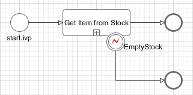 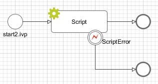
See Help > Designer Guide > Process Modeling > Process Elements Reference > Error Boundary Event for more information.
Error End Event
The new Error End Event can be used to leave the happy path of a process by throwing an error (e.g. if there is not enough stock). It can also be used to rethrow previously catched errors.
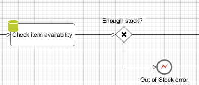
See Help > Designer Guide > Process Modeling > Process Elements Reference > Error End Event for more information.
Error End Event in Html Dialog
With the new Error End Event it is possible to exit an Html Dialog by an Error End process element. This is useful to leave the happy path of the calling business process.
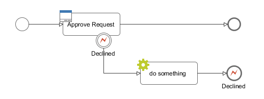
See Help > Designer Guide > Process Modeling > Process Elements Reference > Error End Event for more information.
Error Start Event
The former Exception Element is now called Error Start Event. It can be used to catch errors which were thrown in the same process or inside a subprocess if the configured Error Code matches the occurred error.
See Help > Designer Guide > Process Modeling > Process Elements Reference > Error Start Event
Project Error Process
A project error process catches errors from the whole project. The name of a global error process must start with Error and can contain one or more Error Start Events.
See Help > Designer Guide > Concepts > Error Handling > Project Error Process
Error Object
There is a new error object available at the Error Intermediate Boundary and Error Start Event process element. The object provides information about the error that occurred, like:
- Unique Error ID
- Error Code
- Technical Cause (Java Exception)
- Throwing process element
- Throwing process call stack
- User defined error attributes
See Public API ch.ivyteam.ivy.bpm.error.BpmError for more information.
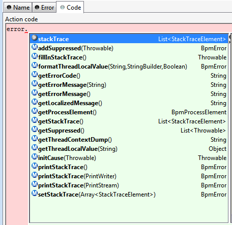
New Default Error Page
The new default error page provides a lot more information about the error:
- Error Id
- Error Code
- Error Message
- Process element and process callstack where the error happened
- Additional error attributes
- Technical error stack trace
- etc
Customizable Error Pages
The content and appearance of the ivy error page for the Designer can be customized the same way as for the Engine.
It is possible to adjust the default error page webapps/ivy/ivy-error-page.xhtml. Alternatively custom error pages can be defined in webapps/ivy/WEB-INF/web.xml.
See also the chapter Configuration -> Configure Tomcat -> web.xml in the Engine Guide.
The responses and corresponding HTTP status codes have been enhanced for task-resume requests. Now, the following status codes are returned in case of failure:
403 - FORBIDDEN: The user is not allowed to work on the task.404 - NOT FOUND:- The task does not exist.
- The task is in an unavailable state.
- The task was finished and the user was not allowed to work on it.
409 - CONFLICT: The user is allowed to work on the task but:- The task was finished by another user.
- Another user is currently working on the task.
409 - CONFLICT will additionally mention the user that has finished or is currently working on the task.
Boundary Event Icons
For documentation reason the icon of an error boundary event can be changed:
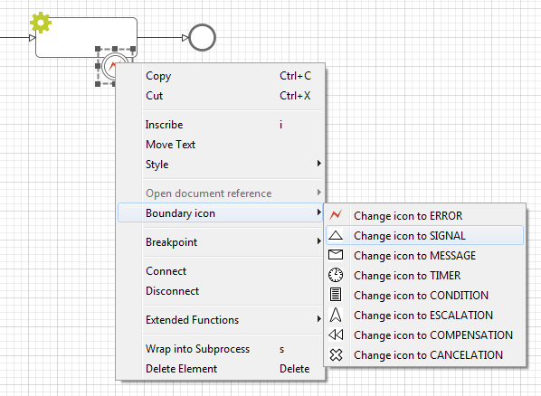New Html Dialog Editor
New Html Dialog Editor
The graphical part of the Html Dialog Editor has been rewritten completely. We now provide a 95% realistic preview of Html Dialogs. It supports the most often used PrimeFaces and JSF elements. Hence, for most dialogs, you now see how they will look like at runtime.
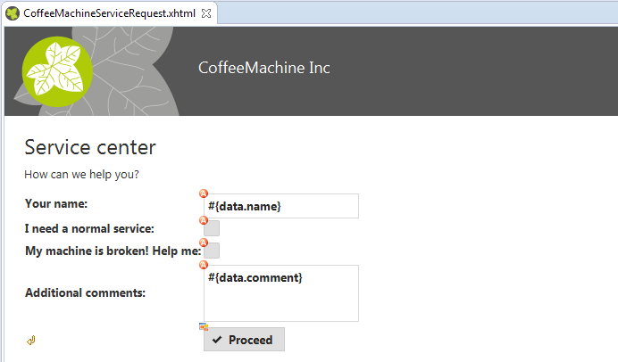See Help > Designer Guide > User Dialogs > Html Dialogs > Html Dialog Editor for more information.
Template visible
The template part of the dialog is now visible too. But you cannot edit it directly. Just open the template in its own editor and edit it there.
See Help > Designer Guide > User Dialogs > Html Dialogs > Html Dialog Editor for more information.
Display composite components
The new editor can display components in the graphical part. You cannot edit the component in place but with a double click you can open it in a new editor window and edit there.
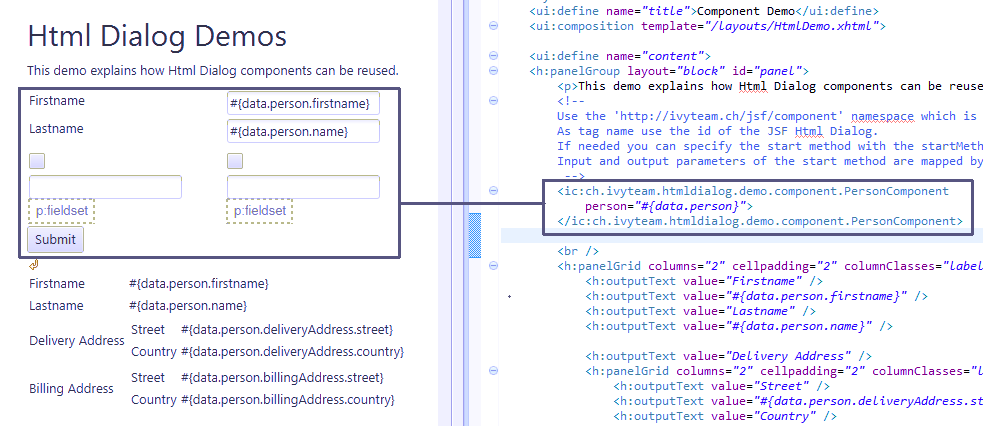See Help > Designer Guide > User Dialogs > Html Dialogs > Html Dialog Editor for more information.
Visual Markers for CMS, Data and Logic
You can now see with one look if your forms are properly translated and bound to data. See the overlay markers for Primefaces components.
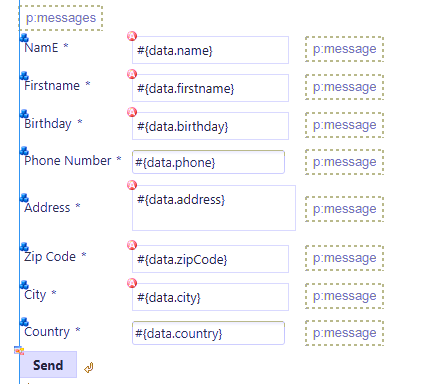See Help > Designer Guide > User Dialogs > Html Dialogs > Html Dialog Editor for more information.
Default action for Primefaces components
Double click on a Primefaces component in the graphical part to edit the most important attributes of the component directly. For Ivy Component Dialogs the double click opens the component in its own editor window.
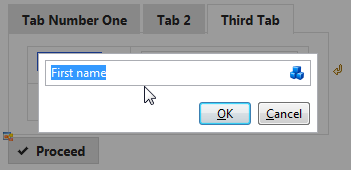See Help > Designer Guide > User Dialogs > Html Dialogs > Html Dialog Editor for more information.
Simplified palette
We only have the most important Primefaces component in the palette so that novice users find the components they need.
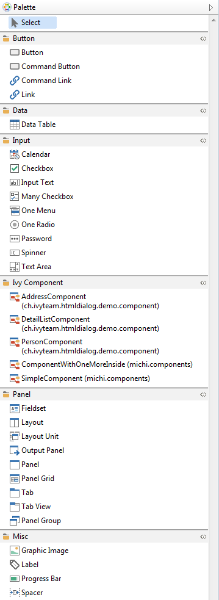See Help > Designer Guide > User Dialogs > Html Dialogs > Html Dialog Editor for more information.
Select tab to see its children
Click on a tab in the graphical part of the Html Dialog Editor to see and edit its children.
| 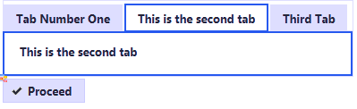 | 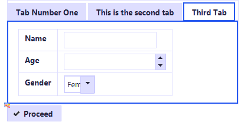 |
See Help > Designer Guide > User Dialogs > Html Dialogs > Html Dialog Editor for more information.
Preferences for the Html Dialog Editor
You can now define which view mode you prefer and use it as default. You can turn on/off the visual markers for data binding, logic mapping and CMS use too.
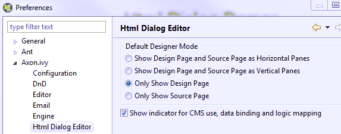See Help > Designer Guide > User Dialogs > Html Dialogs > Html Dialog Editor for more information.
Icon browser
You can now select your icons for buttons in a visual way. Double click on the button to start the default action and open the icon browser to choose your icon.
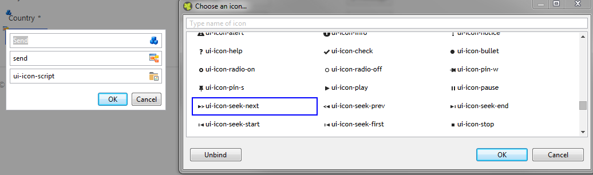See Help > Designer Guide > User Dialogs > Html Dialogs > Html Dialog Editor for more information.
User Task, Offline Dialog (Offline Tasks) and Mobile App
User Task element
The User Task element is used to call a User Dialog in a new task. Thus it combines a Task Switch Event and an Html Dialog.
The dialog can either be a normal Html Dialog or an Offline Dialog. An Offline Dialog is an Html Dialog that is designed to be capable of running offline on a mobile device.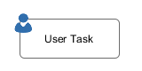
Offline Dialog
The User Task element can be defined to call a normal Html Dialog or an Offline Dialog. The goal of using an Offline Dialog is that the task can be processed offline by a user on a mobile device.
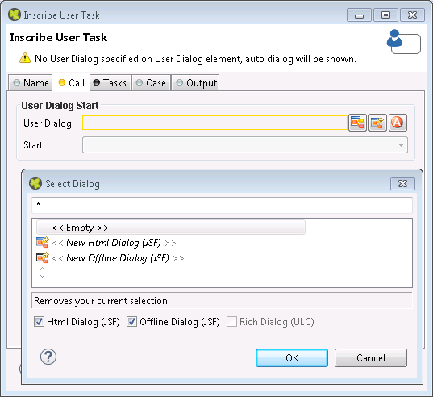Offline Task Concept
There is a new section in the designer guide that explains the Offline Task Concept.
See Help > Designer Guide > Concepts > Offline Tasks
Mobile App
Soon we will have a new Axon.ivy App for iOS devices available in the App store. The app provides a list of all your Axon.ivy tasks and you will be able to work on your offline tasks when the device is offline.
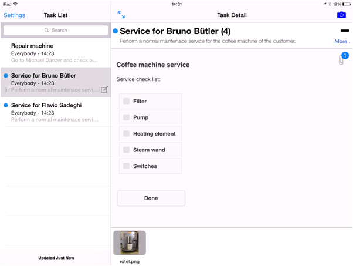
Documents
Document API
There is a new API available that allows you to manage documents and to attach them to workflow cases.
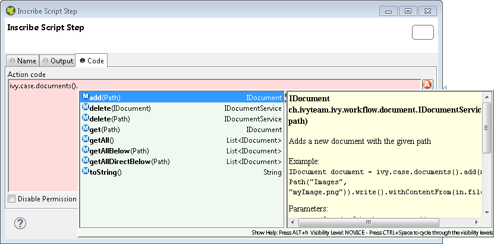Examples:
Attach a new document to a case:
IDocument document = ivy.case.documents().add(new Path("Offers/FirstOffer.txt")).write().withContentFrom("Offer: 1 Axon.ivy License for 10000 CHF");
Get all documents that are attached to a case:
List<IDocument> documents = ivy.case.documents().getAll();
Get all documents of an application that are stored below a certain path:
List<IDocument> templates = ivy.wf.documents().getAllBelow(new Path("/Templates));
See Public API ch.ivyteam.ivy.workflow.document.IDocumentService for more information.
Document User Interfaces
Documents can be managed using the following user interfaces:
- RIA File Manager from the IvyAddOns project
- RIA Workflow UI
- Axon.ivy Portal
- Axon.ivy Mobile App
Continuous Integration
Maven Build Plugin
Ivy Projects are now designed to be built with Maven, so that
Ivy Projects can be built on a continuous integration (CI) server like Jenkins with
minimal configuration effort.
Therefore the project deployment descriptor is now stored as a Maven pom.xml and pre-configured to
build the Ivy Project with the new Maven Plugin com.axonivy.ivy.ci:project-build-plugin.
The Maven Build plugin provides the following main features:
Compilationof Ivy ProjectsPackagingof built Ivy Projects as IAR (ivy archive) artifactsInstallationof IAR artifacts into the local Maven repositoryDeploymentof IAR artifacts to a remote Maven repository
The Designer Guide chapter Concepts -> Continuous Integration provides more detailed informations.
Project Graph
The dependencies of Projects in the Designer workspace can now be visualized with a graph. The new 'Project Graph' view comes with auto layout functionality and allows quick navigation to the Deployment Descriptor editor by double click on a node.
The Project Graph can be opened with the menu Window -> Show View -> Other -> Axon.ivy -> Project Graph
or with the new toolbar button within the Project Deployment Descriptor Editor.
New Process Engine
New Process Engine
Completely new and rewritten process engine. Based on the latest available technologies.
100% Java
100% implemented in Java.
IvyScript is no longer used in the engine itself.
Completely new Java based execution model. There is no longer a PetriNet model used to execute your processes.
Improved Debugging
While debugging its now possible to ...
- Jump into a callable or embedded process
- Jump over a callable or embedded process (or process element)
- Return from inside a callable or embedded process to the caller process
Additional simulation options
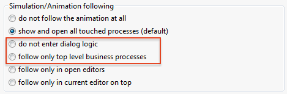
Improved Performance
The new process engine is 20% faster. This really boosts your processes.
The building of the engine model is about 50% faster.
User Dialog
PrimeFaces 5.3
Upgraded PrimeFaces to a newer version. The new version includes several fixes, improvements and new components like diagrams and steps.
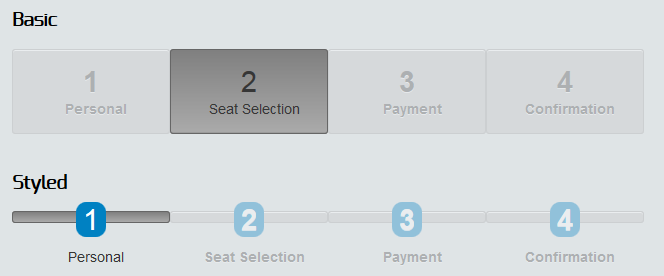The steps component is an indicator for the different steps in a workflow, it's optimized for responsive design.
PrimeFaces Extensions 4.0.0
Upgraded PrimeFaces Extensions to a newer version. The new version includes new components like gravatar and analogClock.
Faces Validator support
Ivy projects can now declare and use their own FacesValidator implementations. So you can easily write a custom validator for Html Dialog attributes in your project.
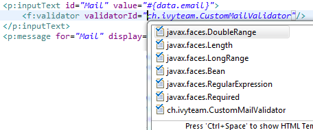New certificate
The client libraries for the Rich Dialog technology in this release are signed with a new certificate. The certificate is now issued to AXON IVY AG. ivyTeam the former provider company of Axon.ivy Designer and Engine was merged into this new company. All users of Rich Dialog UI's will see a security warning dialog the first time they start the process/application on a new Designer/Engine.
See also the official information on the Java website for more information.
Session timeout
You can define now a session timeout for rich dialogs if you want to close a Rich Dialog application and to log out the user after a configurable period of time. Go to the configuration folder in your installation and edit the file jnlpconfig.any to turn the feature on.
Look and Feel support
We dropped support for the Nimbus, JGoodies and Java default Look and Feels. We now support only Synthetica Look and Feels and the Xpert.Line Look And Feel (which is based on Synthetica).
See also the Q&A entry Which Look and Feels are supported for Rich Dialogs for more information.
Editor Improvements
Start Process in process editor
A process can now be started directly on the Request Start element.
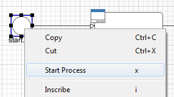
Copy Process as Image to Clipboard in process editor
The copy command (via shortcut <ctrl>+c or via editor menu) now copies the complete process or the current selection as image to the clipboard. The image clipboard content can then be pasted into other programs like MS Word.
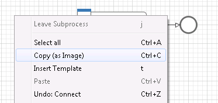
Jump to Data Class from process editor
Use the new Jump to Data Class command (via shortcut c or via process editor context menu) to navigate from a process to the associated data class editor.
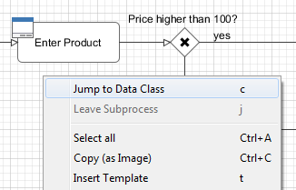
Improved data class field input in data class editor
If you configure the name of a data class field you can use the
format
fieldName : fieldType
to specify not only the name but also the type of the data class
field in one step.
If only one type matches the entered simple type name then the matching one is choosen.
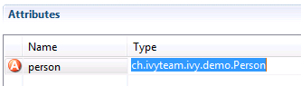If more than one matches then the type browser is displayed with the simple name as predefined filter.
More concrete fitlers can be used.
java.u.Listforjava.util.List.List<Calendar>forList<java.util.Calendar>.
Orphan removal support in entity class editor
JPA entity class fields, which reference another entity class, now support the orphanRemoval option.
This reduces the code needed to remove an associated entity.
The new option can be enabled in the association column of the entity class editor.

Add co from URL in CMS view
You can add a co now directly from an URL. Just copy the URL and use it for the import.
Multi select in CMS view
You can select multiple content objects in the view and perform the same action to that selection. For example you can now delete multiple content objects at once.
New Web Service configuration editor
The new Web Service Configuration editor has a cleaned up and more intuitive user interface. Many bugs that the old editor was suffering from are solved with the new editor.
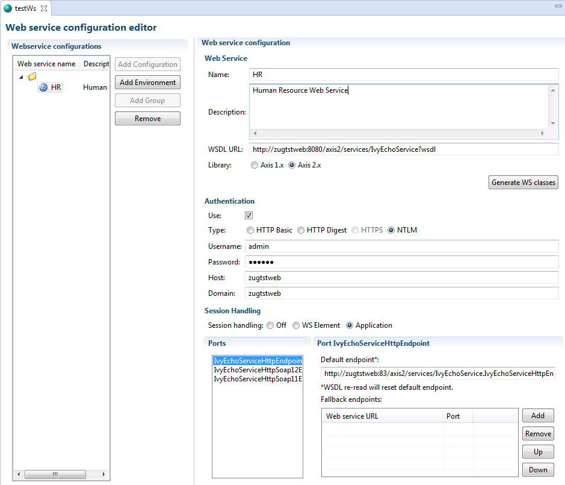NTLM Authentication in web service configuration editor
NTLM authentication can now be configured in the Web Service Configuration editor. Until now NTLM authentication was only available at the web service process element directly.
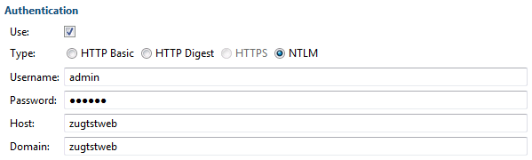Miscellaneous
REST API
- HTTP GET /ivy/api/{application name}/engine/info - Returns the version and the name of the engine.
- HTTP GET /ivy/api/{application name}/workflow/task/{taskId} - Returns the task with the given task identifier.
- HTTP GET /ivy/api/{application name}/workflow/tasks - Returns the tasks the authenticated user can work on.
- HTTP GET /ivy/api/{application name}/workflow/tasks/count - Returns the number of tasks the authenticated user can work on.
- HTTP GET /ivy/api/{application name}/workflow/case/{caseId}/document/{documentId} - Returns the content of the document.
Custom Properties API
There is a new API available to store custom specific data. This can be used in projects to store small project specific information without the overhead of using an own database.
ivy.wf.getApplication().customProperties().property("hrm.user.showDetails").setValue(true);
boolean showDetails = ivy.wf.getApplication().customProperties().property("hrm.user.showDetails").getBooleanValue();
List<ICustomProperty> properties = ivy.wf.getApplication().customProperties().findAllStartingWith("hrm.user.");
New Eclipse Platform Version
Java 8
Axon.ivy Designer is now bundled with the Java 8 JRE. You can now use new Java 8 features like Lambda expressions or the stream API.
If you use Rich Dialogs in your project, then you and your users must use Java 8.
Disable Permission Checks in Script Step
Jump to Process Element out of an Engine log
Log Web Service Message
DEBUG.
This helps debug web service problems.
Web Service Element: Call to http://zugtstweb:8080/axis2/services/Version.VersionHttpSoap11Endpoint/ (Operation /name=getVersion /port=VersionHttpSoap11Endpoint /parameters=[]) successfully executed in 17598 milli seconds!
*** SOAP Request ***
POST /axis2/services/Version.VersionHttpSoap11Endpoint/ HTTP/1.1
Content-Type: text/xml; charset=UTF-8
SOAPAction: "urn:getVersion"
User-Agent: Axis2
Host: zugtstweb:8080
Content-Length: 233
<?xml version="1.0" encoding="UTF-8"?><soapenv:Envelope xmlns:soapenv="http://schemas.xmlsoap.org/soap/envelope/"><soapenv:Body><ns1:getVersion xmlns:ns1="http://axisversion.sample"></ns1:getVersion></soapenv:Body></soapenv:Envelope>
*** SOAP Response ***
HTTP/1.1 200 OK
Server: Apache-Coyote/1.1
Content-Type: text/xml;charset=UTF-8
Transfer-Encoding: chunked
Date: Wed, 30 Sep 2015 15:23:01 GMT
12c
<?xml version='1.0' encoding='UTF-8'?><soapenv:Envelope xmlns:soapenv="http://schemas.xmlsoap.org/soap/envelope/"><soapenv:Body><ns:getVersionResponse xmlns:ns="http://axisversion.sample"><ns:return>Hi - the Axis2 version is 1.6.1</ns:return></ns:getVersionResponse></soapenv:Body></soapenv:Envelope>
0Task/Case Query API Improvement
TaskQuery.create().where().description().isLike("%John Smith%");
CaseQuery.create().where().description().isNotLike("%Peter Q. Public%");